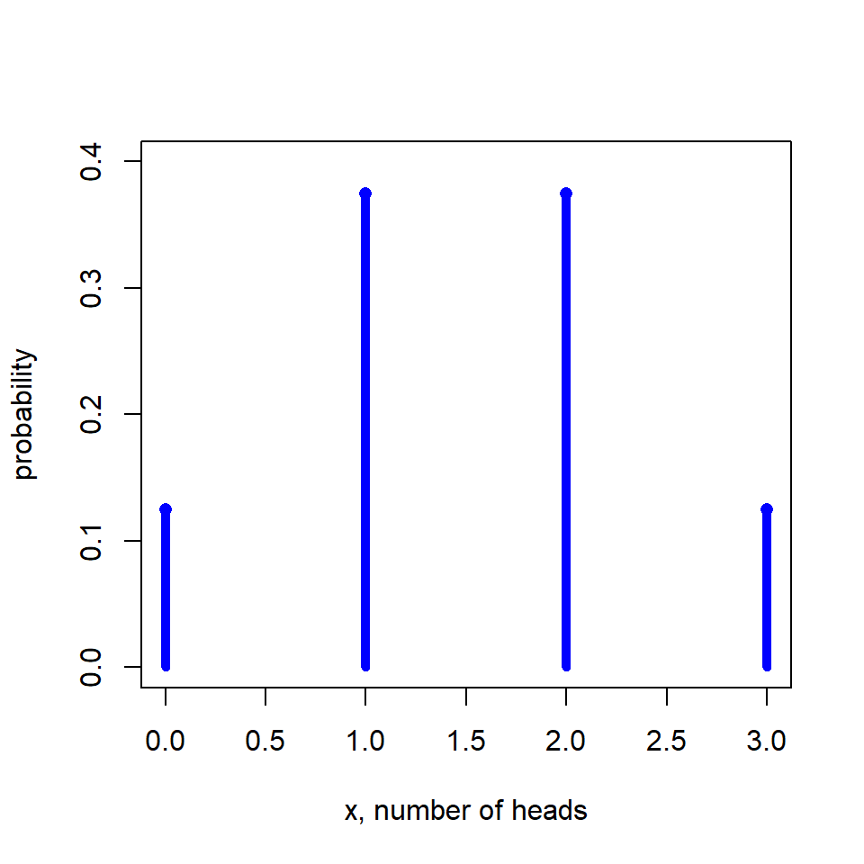

5 Module 5
Module Focus:
One line summary In this module, we ???.
5.2 Supplementary Notes
De Veaux, Velleman & Bock’s approach to probability is at times more mathematical than necessary for this course, so we have prepared these notes to supplement explanation of the important concepts and to highlight where some content in the relevant chapters is not required.
5.2.1 Introduction
The concept of probability is familiar from everyday events and experiences. We use the language of probability in all sorts of contexts ranging from describing the vagaries of the weather to the anticipated results of sporting contests and expectations about our own future. Words such as likely, probable, unexpected, impossible and so on are part of our language.
Although we don’t usually associate a specific number with such descriptions we are aware that outcomes which are unlikely have a probability near 0% and outcomes which are nearly certain have a probability near 100%. The simple idea of using numbers in the range 0 to 1 or 0% to 100% to quantify probabilities leads to many useful results. For example, if we are 100% certain of dying then we must be 0% certain of living forever. If a horse is 10% certain of winning a race it must be 90% certain of losing. In general terms the probability of an event occurring is one minus the probability of it not occurring. This is a rule of probability.
This module formalises these familiar probability properties and rules. The second half of the module introduces the underlying principles of statistical inference – hypothesis testing and confidence intervals. The remaining modules in this course include a variety of hypothesis testing contexts and related statistical concepts all of which have their foundations in probability theory.
5.2.2 Randomness and Probability
Answers to probability questions can be expressed as a decimal fraction (such as 0.28) or a percentage (such as 28%). As usual, rounding off the final answer sensibly is recommended. Knowing the properties and rules about probabilities is one thing; being able to solve problems using them is another. The only way to get good at it is to practise enough problems to recognise what’s required. There is a minimum list of problems to attempt in the corresponding tutorial in the Workbook. If you find them straightfor ward, great. If not, do some more now or later. If you enjoy working with probabilities (some of us do!), read De Veaux, Velleman & Bock, (4th edition), Chapter 14 (De Veaux, Velleman & Bock, (5th edition), Chapter 13). None of that material is assessable however!
Random Variables
Sounds like a fancy description of something. It’s not. Any variable that takes on numerical values can be called a random variable. Therefore practically all the variables we’ve seen up to now could be called random variables. Even the variables that are categorical, provided a coding is used for them, are random variables. It just happens that when working with probabilities we like to call variables ‘random variables’ whereas when dealing with statistics we like to call them just variables. Nobody is going to worry if you leave out or put in the word ‘random’ though when talking about variables in any context.
Counts and rankings are common examples of discrete random variables. Height, weight, time, and length are common examples of continuous random variables. Notice that we measure and record the values of continuous random variables on a discrete scale because there’s a limit to the precision of measuring instruments. We can think of the exact value as having been rounded off either because of the imprecision of the measuring device or as dictated by the requirements of the study. Hence, even though we might record, for example, human heights to the nearest centimetre, the variable ‘height’ is nonetheless continuous in that the exact values cannot be all listed, being anywhere in some range of about 50 to 250 cm.
This module deals with discrete (random) variables and talks about probability models for them. We’ve already seen a model for a continuous (random) variable back in Module 3—the Normal model. That was an example of a probability model for a continuous variable because it describes the values a variable can take on and the associated probabilities—remember, they were the areas under the graph. For discrete probability models, because we can list all the values, we usually describe the model using a table with all the values in one row and the corresponding probabilities in another. If you’re thinking this is like the distribution of a variable, you’re exactly right. A probability model is often described as a probability distribution.
The thing about a probability model (or distribution) is that it models reality; the probabilities are ‘true’ relative frequencies, not the actual relative frequencies found after a few trials. What you actually get is reality; what you expect to get is theory and that’s what the model describes.
The book talks about probabilities as ‘true’ relative frequencies in the sense of the Law of Large Numbers. It’s worthwhile also to think about the meaning of proportions. A proportion is just a relative frequency. For example, if a coin is tossed 10 times and 4 heads are obtained, the relative frequency or proportion of heads is 4/10 or 0.4. Theprobability or true relative frequency of course is different, being 0.5. This 0.5 could also be referred to as the ‘true’ proportion, and sometimes, depending on the context, that is exactly the terminology we use. The standard model for the gender distribution of human beings, for example, is 50% female and 50% male. This is a discrete probability model or distribution. Depending on the question being asked it can be used to describe the (true) proportion of females in the population as 0.50 or to give 0.50 as the probability that a person chosen at random fromthe population is female.
This last interpretation is certainly important in the context of surveys and experiments where the idea of random selection or random assignment is used. For example, if 20% is the true proportion of the population who are in favour of some government policy, what we are expecting by choosing participants at random for a poll is that each participant has a 20% probability of being in favour of the policy. Similarly for an experiment. If subjects are assigned at random to three treatments say, then each subject has a 1/3 probability of receiving treatment A, and that’s the same for every subject. These are fundamental ideas which underpin the analyses we deal with in much of the rest of the course.
This idea of the expected value of a random variable is like the mean of a variable. When data is used to produce a mean we call the result \(\bar{y}\) or \(\bar{x}\) (or some variable name with a bar over the top). Expected value, being based on a probability model rather than actual data, is like a theoretical mean. The word ‘expected’ suggests it’s the mean we expect to get from real data if it wasn’t for sampling variation. The notation E(X) is pretty well self-explanatory. We tend not to use it in this course though, preferring to just call the expected value µ because it’s a mean, or if we have a few µ’s lying around, µ1 (“mu sub 1”) or µ2 or “mu sub something”.
The standard deviation of a random variable is likewise the standard deviation we expect to get from real data for the variable if it wasn’t for sampling variation.
Here’s an example using the formulas for µ and σ, for a discrete random variable, given in this chapter.
Example 5.1
A coin is tossed three times and the number of heads counted.
What are the possible values for this variable?
Describe the distribution of this variable.
*What is the expected number of heads?
*What is the standard deviation of the number of heads?
Solution
- Let X = numberofheads. Then X cantake the values 0, 1, 2 or 3.
- By being systematic, we can list eight outcomes in this sequence of trials:
hhh,hht,hth,thh,htt,tht,tth,ttt
Provided the coin is balanced, these eight outcomes are equally likely. The first of these outcomes produces 3 heads, the next three produce 2 heads, the next three produce 1 head, and the last outcome produces 0 heads. Consequently the probabilities associated with these outcomes are as displayed in the table:
\[ \begin{array}{c|cccc} x & 0 & 1 & 2 & 3 \\ \hline \text{probability} & \frac{1}{8} & \frac{3}{8} & \frac{3}{8} & \frac{1}{8} \\ \end{array} \] ``
This table represents the probability model or probability distribution of the variable X. It is represented graphically in Figure 5.1. We could also convert the above table to decimals rather than fractions:

Figure 5.1: Probability distribution for number of heads in 3 tosses
The probability distribution for the number of heads when tossing a fair coin three times is:
\[ P(X = x) = \binom{3}{x} (0.5)^3,\quad x = 0,1,2,3. \]
The standard deviation is:
\[ \sigma = \sqrt{ 0.125(0 - 1.50)^2 + 0.375(1 - 1.50)^2 + 0.375(2 - 1.50)^2 + 0.125(3 - 1.50)^2 } \]
\[ \sigma = \sqrt{0.75} = 0.866. \]